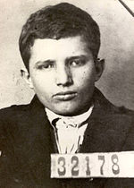

Nicolae Ceauşescu

"Mai sunt oameni care nu si-au iubit poporul si partidul, care au tradat si vor trada introtdeauna"
"Eu mi-am făcut datoria."
Nicolae Ceaușescu (n. 26 ianuarie 1918, Scornicești - d. 25 decembrie 1989, Târgoviște) a fost un om politic comunist român, Secretar general al Partidului Comunist Român, șeful de stat al Republicii Socialiste România din 1967 până la căderea regimului comunist, survenită în 22 decembrie 1989. La 22 decembrie 1989, printr-un decret al CFSN semnat de Ion Iliescu, a fost constituit Tribunalul Militar Excepțional. La 25 decembrie 1989, soții Nicolae și Elena Ceaușescu au fost judecați în cadrul unui proces sumar de acest tribunal, condamnați la moarte și executați la câteva minute după pronunțarea sentinței.
Copilăria
Ceaușescu s-a născut în satul Scornicești (actualmente oraș) din județul Olt, la 26 ianuarie 1918, într-o familie de țărani cu 10 copii. Tatăl său, Andruță, avea 3 hectare de pământ, câteva oi și își mai susținea familia din croitorie. „Nu se interesa de copiii lui; fura, bea, sărea la bătaie și înjura...”, spunea despre el bătrânul preot din Scornicești.Mama lui, Alexandrina (născută Lixandra), era o femeie supusă și muncitoare.Casa lor avea două camere, iar era mâncarea de bază era mămăliga. Nicolae a făcut patru clase la școala din sat, în care învățătorul preda într-o sală cursuri simultane pentru elevii mai multor clase. Micul Ceaușescu nu a avut cărți și adesea mergea la școală desculț. Nu avea prieteni, era nervos și imprevizibil.La vârsta de 11 ani, după absolvirea școlii primare, Ceaușescu a plecat la București, unde s-a angajat ca ucenic de cizmar. Alexandru Săndulescu, membru activ al PCR, și-a inițiat ucenicul în misiuni conspirative.
Cariera politică
În 1932 devine membru al Partidului Comunist din România, formațiune politică aflată în ilegalitate la acea vreme. Este arestat prima oară în 1933 pentru agitație comunistă în timpul unei greve. În 1934 urmează încă trei arestări – pentru colectare de semnături în sprijinul eliberării unor muncitori feroviari acuzați de activitate comunistă și pentru alte acțiuni similare. În urma acestor arestări, este etichetat de autoritățile vremii drept „agitator comunist periculos”, precum și „distribuitor activ de material de propagandă comunistă și antifascistă”.
După eliberarea din arest, Ceaușescu a dispărut pentru o vreme, el povestind în autobiografia sa de după război că a activat în rețelele comuniste din Oltenița și „regionala Prahova” (ceea ce în organizarea interbelică a PCdR însemna județele Prahova și Dâmbovița).
Cert este că în 1936, Ceaușescu era secretar regional al UTC și încerca, împreună cu agitatorul polonez Vladislav (sau Vladimir) Tarnovski, să coaguleze celulele comuniste. În ianuarie 1936, cei doi au vizitat celula comunistă constituită în comuna Ulmi de lângă Târgoviște, încercând să-i atragă pe membrii ei cu funcții mai înalte în ierarhia comunistă.
Eliberat la termen în 1938, Ceaușescu a rămas în libertate doar doi ani, întrucât în 1939 a fost condamnat în lipsă la 3 ani de închisoare pentru continuarea propagandei comuniste, fiind din nou arestat în 1940.